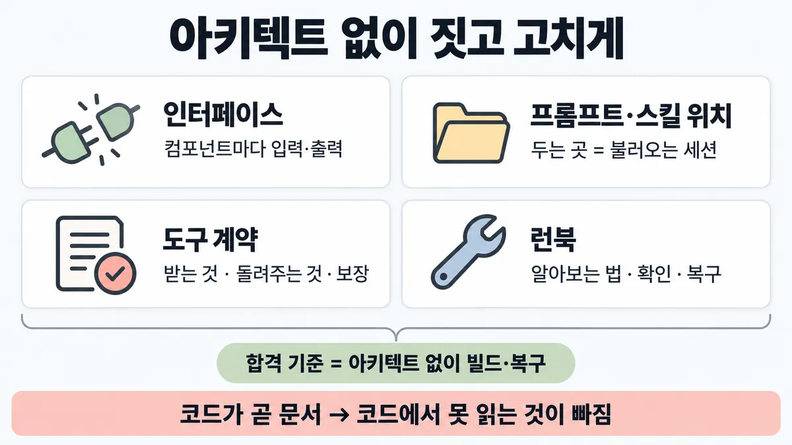
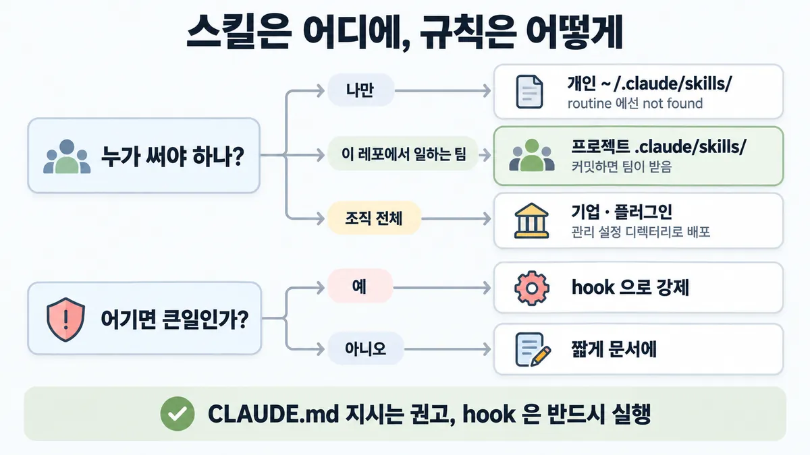

■ 구현 가이드
왜 배우나 — 시험이 요구하는 것
시험 목표 6.4 구조 문서화 · D6 사람·문서 14%Document architectures and provide implementation guidance
이 개념으로 푸는 판단 (할 수 있어야 하는 것)
- 6.4② 아키텍트 없이 팀이 짓고 고칠 수 있어야 한다 — 구현 가이드에 무엇을 넣나? (빈 목표) — 구현 가이드 구성 (인터페이스 · 프롬프트/스킬 위치 · 도구 계약 · 런북)
한눈에
아키텍트 없이 팀이 짓고 고치게 하는 문서. 합격 기준 = "아키텍트 없이 빌드·복구할 수 있는가" 업계 일반
공식에서 가장 가까운 원칙 : 스스로 완결된 명세(self-contained spec) = 관련 파일·인터페이스를 짚고 · 범위 밖을 적고 · 되는지 증명하는 end-to-end(처음부터 끝까지) 검증으로 끝냄 ✓ 확인 (Claude Code 코딩 명세 기준 — 구현 가이드로 옮긴 건 추론)
비유 OpenAPI 스펙(인터페이스·계약) + 설정이 어느 레포 어느 경로에 있는지 + 온콜 런북. 기준 = 새벽 온콜이 설계자 없이 복구하나. "코드가 문서다" 가 속이는 습관


ELI5
새로 온 요리사가 주방장 없이도 같은 요리를 내게 하는 조리 카드예요.
- 재료가 어디 있는지(위치), 무엇을 넣고 무엇이 나오는지(입출력)를 적어요.
- 칼·오븐 쓰는 법은 "언제 쓰고 언제 안 쓰는지"까지 적어요.
- 불이 나면 무엇부터 볼지 적은 비상 카드도 붙여요.
- "절대 가스 틀어 두지 말 것"은 카드 대신 자동 차단기를 달아요.
개념 설명
원리
합격 기준
- "아키텍트 없이 빌드·복구할 수 있는가" (업계 일반).
- 공식에서 가장 가까운 기준 = 스스로 완결된 명세 : 관련 파일·인터페이스를 짚고 · 범위 밖을 적고 · 되는지 증명하는 end-to-end(처음부터 끝까지) 검증으로 끝냄. Claude Code 코딩 명세 기준이라 구현 가이드로 옮긴 건 추론.
네 칸
- 인터페이스 : 컴포넌트마다 입력·출력.
- 프롬프트·스킬 위치 : 두는 곳이 어느 세션이 불러오는지를 정함. 개인
~/.claude/skills/는 이 기계의 내 프로젝트만, 프로젝트.claude/skills/는 커밋하면 팀이 받음, 조직 전체는 관리 설정·플러그인. 이름이 겹치면 기업 > 개인 > 프로젝트. - 도구 계약 : 받는 것(
input_schema, 복잡하면input_examples) · 돌려주는 것(설명에 "못 돌려주는 것"까지) · 보장하는 것(strict: true면 입력이 스키마와 맞음). 설명이 도구 성능의 가장 큰 요인, 도구당 최소 3~4문장. - 런북 : 자주 나는 장애마다 알아보는 법 · 확인할 것 · 복구 방법. 공식 문서에 런북 없음 → 업계 일반.
문서만으론 안 전해지는 것 둘
- 기대 동작 : 같은 명세도 두 엔지니어가 엣지 케이스를 다르게 읽음 → 평가셋이 모호함을 없앰. 평가가 있으면 기준선·regression(회귀) 테스트가 딸려 옴.
- 꼭 지킬 규칙 : CLAUDE.md 지시는 권고, hook 은 결정적(deterministic). "절대 X" 를 문서에 크게 적는 걸로는 못 막음 → 강제 장치.
문서 쪽 규칙 쓰는 법 (Claude 가 읽는 문서 기준)
- 짧게 : 길면 규칙이 묻힘. 강조는 몇 줄에만.
- 구체적이고 검사 가능하게 · 금지만 말고 대신 할 것 (Skilljar).
- 코드로 못 읽는 것 위주 : 흔한 함정 · 환경 특이점(필요한 환경 변수) · 구조 결정.
규칙과 판단


갈림길
①③⑤ 무엇을 적나 [6.4②]
인터페이스
관련 파일·인터페이스 · 범위 밖 · end-to-end 검증 ✓ 확인 (코딩 명세 기준 — 옮긴 건 추론)
도구 계약
받는 것 · 돌려주는 것 · 보장하는 것. 설명이 도구 성능의 가장 큰 요인 ✓ 확인
런북
알아보는 법 · 확인할 것 · 복구 방법 업계 일반
② 어디에 두나 [6.4②]
개인 ~/.claude/skills/
이 컴퓨터만 · 클라우드 세션·routine 에선 "not found" ✓ 확인
프로젝트 .claude/skills/
커밋하면 팀이 받음 ✓ 확인
기업 · 플러그인
관리 설정 디렉터리 또는 플러그인으로 배포 ✓ 확인
④⑥ 규칙을 어떻게 [6.4②]
강제 장치
CLAUDE.md 지시는 권고, hook 은 결정적(deterministic)이고 반드시 실행 ✓ 확인
짧게 문서에
구체적이고 검사 가능하게, 금지만 말고 대신 할 것 ✓ 확인 (Skilljar)
평가셋
평가셋(eval suite)이 모호함을 없앰 ✓ 확인
규칙 원문 ①②③④⑤⑥ (갈림길로 그린 규칙)
-
인터페이스 : 컴포넌트마다 입력·출력. 스스로 완결된 명세 = 관련 파일·인터페이스 · 범위 밖 · end-to-end 검증 ✓ 확인 (옮긴 건 추론) [6.4②]
명세를 정확히 쓰는 시간이 구현을 지켜보는 시간보다 더 쓸 만함 ✓ 확인
-
프롬프트·스킬 위치 : 두는 곳이 어느 세션이 불러오는지를 정함 ✓ 확인 [6.4②]
위치 경로 불러오는 곳 기업 관리 설정 디렉터리의 .claude/skills/조직이 배포한 기계의 모든 사용자 개인 ~/.claude/skills/이 기계의 내 모든 프로젝트 — Cowork·클라우드 세션은 아님 프로젝트 .claude/skills/이 레포 세션 — 커밋하면 팀이 받음 조직 전체에는 관리 설정 디렉터리 또는 플러그인으로 배포 ✓ 확인 · 이름이 겹치면 기업 > 개인 > 프로젝트 ✓ 확인 · 개인 폴더에만 둔 스킬은 routine 이 부르면 "not found" ✓ 확인 → 팀에 넘길 건 레포에
CLAUDE.md 도 같음 : 프로젝트 파일 = 소스 관리로 팀 공유 · 구조 결정 · 빌드·테스트 명령 ✓ 확인
스킬 동작·API 쪽 공유 범위(claude.ai 와 API 는 따로 올림)는 ■ Agent Skills progressive disclosure. API 앱 프롬프트도 옛 대화 속이 아니라 버전 관리되는 곳에 업계 일반
-
도구 계약 = 받는 것 · 돌려주는 것 · 보장하는 것 [6.4②]
받는 것 :
input_schema(JSON Schema) · 입력이 복잡하면input_examples✓ 확인설명이 도구 성능의 가장 큰 요인 : 무엇을 하나 · 언제 쓰고 언제 안 쓰나 · 파라미터 뜻 · 못 돌려주는 것. 도구당 최소 3~4문장 ✓ 확인
새 팀원에게 설명하듯 — 쿼리 형식·용어 뜻·자원 관계 같은 암묵 지식을 드러냄 ✓ 확인
보장하는 것 :
strict: true→ 도구 입력이 스키마와 맞음을 보장. 없으면"2"(문자) 대2(숫자) · 필수 필드 누락 ✓ 확인 · strict 도구는 요청당 20개까지 ✓ 확인도구 모양·응답 설계 세부 → ■ 도구 설계
-
기대 동작은 평가셋으로 : 같은 명세도 두 엔지니어가 엣지 케이스를 다르게 읽음 → 평가셋(eval suite)이 모호함을 없앰 ✓ 확인 [6.4②]
평가가 있으면 기준선·regression(회귀) 테스트가 딸려 옴 (지연(latency)·토큰·과제당 비용·오류율) ✓ 확인 → end-to-end 검증 = 평가셋 돌리기 (연결은 추론) → ■ 검증 층
-
런북 : 자주 나는 장애마다 알아보는 법 · 확인할 것 · 복구 방법 업계 일반 공식 문서에 런북 없음 [6.4②]
무엇부터 볼지는 → ■ observability 세 신호
-
꼭 지킬 규칙은 강제 장치로 : CLAUDE.md 지시는 권고, hook 은 결정적이고 반드시 실행 ✓ 확인 · "never push to main" 은 CLAUDE.md 가 아니라 pre-tool-use hook ✓ 확인 (Skilljar) [6.4②]
문서 쪽 규칙은 짧게 : 길면 규칙이 묻힘 ✓ 확인 · 구체적이고 검사 가능하게, 금지만 말고 대신 할 것 ✓ 확인 (Skilljar) · 강조는 몇 줄에만 — 여러 줄을 강조하면 아무것도 눈에 안 띔 ✓ 확인
(Claude 가 읽는 문서 기준 — 사람 팀 문서로 넓힌 건 추론)
더 깊이 : 판단 규칙 · 상황 변수 (설명)
판단 규칙
| 조건 | 답 | 등급 | 근거 |
|---|---|---|---|
| 구현 가이드의 명세 모양 | 관련 파일·인터페이스 · 범위 밖 · end-to-end 검증 | ✓ 확인 (코딩 명세 기준) | best-practices en 552줄 "The most useful specs are self-contained…" |
| 도구를 넘길 때 무엇을 적나 | 무엇을 하나 · 언제 쓰고 안 쓰나 · 파라미터 뜻 · 못 돌려주는 것, 3~4문장+ | ✓ 확인 | define-tools ko/en 37~41줄 |
| 입력 모양이 복잡함 | input_examples 추가 |
✓ 확인 | define-tools en 42줄 |
| 입력이 스키마와 꼭 맞아야 함 | strict: true (요청당 20개까지) |
✓ 확인 | strict-tool-use ko/en 1·12줄 · structured-outputs en 213줄 |
| 팀이 같이 쓸 스킬 | 프로젝트 .claude/skills/ 에 커밋 |
✓ 확인 | Claude Code skills en 299·305줄 |
| 조직 전체 | 관리 설정 디렉터리 · 플러그인 | ✓ 확인 | Claude Code skills en 299·303줄 |
| 기대 동작의 엣지 케이스 | 평가셋을 같이 넘김 | ✓ 확인 | demystifying-evals en 48줄 |
| 어기면 큰일인 규칙 | hook 같은 강제 장치 | ✓ 확인 | best-practices en 406줄 · Skilljar 486929 12줄 |
| 장애 대응 | 런북(알아보는 법·확인할 것·복구 방법) | 업계 일반 | 목록 6.4② — 공식 문서에 runbook·playbook 0건 |
상황 변수
| 변수 | 값 | 답 쪽 | 등급 | 근거 |
|---|---|---|---|---|
| 스킬 쓰는 사람 | 나만 | 개인 ~/.claude/skills/ |
✓ 확인 | skills en 304줄 |
| 스킬 쓰는 사람 | 이 레포의 팀 | 프로젝트 .claude/skills/ + 커밋 |
✓ 확인 | skills en 305줄 |
| 실행 환경 | routine · 클라우드 세션 | 개인 폴더 스킬은 "not found" → 레포에 커밋 | ✓ 확인 | skills en 304·367줄 |
| 같은 이름 스킬 | 개인·프로젝트 둘 다 | 개인 것이 이김 (기업 > 개인 > 프로젝트) | ✓ 확인 | skills en 352줄 |
| 도구 입력 | 중첩 객체 · 형식에 민감 | input_examples |
✓ 확인 | define-tools en 42줄 |
| strict 걸 도구 수 | 20개 넘음 | 스키마가 깨지면 곤란한 도구만 strict | ✓ 확인 | structured-outputs en 213줄 |
| 규칙 무게 | 관례(코드 스타일) | 문서에 짧고 검사 가능하게 | ✓ 확인 (Skilljar) | Skilljar 486929 45·54줄 |
| 규칙 무게 | 어기면 사고(main push) | hook | ✓ 확인 | best-practices en 406줄 |
| 도구 수 | 30~50개 넘음 | 설명 보강만으론 부족 → tool search 쪽 | ✓ 확인 | ■ 도구 설계 · 규칙 ⑤ · tool-search-tool en 6줄 |
연습 문제
아키텍트가 고객지원 Agent 의 티켓 요약 스킬을 자기 ~/.claude/skills/ 에만개인 폴더 둔 채 인계했다. 새 팀이 이 레포에서 함께 쓰며 매일 밤 routine 으로 돌리려 하자팀 · routine "not found" 가 난다. 스킬을 어디에 둬야 할까?
시험 대비
함정
- "코드와 프롬프트가 곧 문서" → 코드에서 못 읽는 것(흔한 함정 · 환경 특이점 · 구조 결정)이 빠짐. CLAUDE.md 에 넣을 것 = 바로 그것들 ✓ 확인
- "도구 설명은 짧게, 세부는 구현자가 코드에서 읽는다" → 설명이 도구 성능의 가장 큰 요인 ✓ 확인
- "스킬·프롬프트를 내
~/.claude/skills/에 두고 인계" → 팀·클라우드 세션엔 안 보임. 레포.claude/skills/에 커밋 ✓ 확인 - "스키마만 적어 두면 도구 입력이 늘 맞음" → 보장은
strict: true일 때 ✓ 확인 - "가이드에 '절대 X 하지 말 것' 을 크게 적으면 끝" → 권고일 뿐. 막아야 하면 hook 같은 강제 장치 ✓ 확인 · 강조 남발은 아무것도 눈에 안 띔 ✓ 확인
- "명세 문서만 넘기면 기대 동작이 전해짐" → 엣지 케이스는 사람마다 다르게 읽음. 평가셋을 같이 ✓ 확인
- "런북 = 아키텍트 연락처" → 기준은 아키텍트 없이 복구 업계 일반
신호
"Provide extremely detailed descriptions. This is by far the most important factor in tool performance."
"Aim for at least 3–4 sentences for each tool description, more if the tool is complex."
"When writing tool descriptions and specs, think of how you would describe your tool to a new hire on your team."
"Setting strict: true on a tool definition guarantees Claude's tool inputs match your JSON Schema"
"Where you save a skill decides which sessions load it."
"Save it under your home directory to get it in every project, commit it to a repository to share it with everyone who works there, or distribute it through a plugin or managed settings to reach a whole team."
"The most useful specs are self-contained: they name the files and interfaces involved, state what is out of scope, and end with an end-to-end verification step that proves the feature works."
"Two engineers reading the same initial spec could come away with different interpretations on how the AI should handle edge cases. An eval suite resolves this ambiguity."
"Unlike CLAUDE.md instructions which are advisory, hooks are deterministic and guarantee the action happens."
더 깊이 : 뒤집히는 때 · 오답 재료 (설명)
뒤집히는 때
1. 개인 폴더가 맞는 때 — 그리고 안 맞게 되는 때
- 조건 : 혼자 쓰는 요약 스킬 → 개인
~/.claude/skills/가 맞음(내 모든 프로젝트). - 뒤집힘 : 같은 스킬을 매일 밤 routine 으로 돌리기로 함 → routine 은 새 클라우드 세션이라 개인 폴더를 안 읽음 → "not found". 레포
.claude/skills/에 커밋하거나 claude.ai 계정 쪽에 켬. - 등급 : ✓ 확인
- 근거 : skills en 304·367~369줄
2. 도구 설명을 늘려도 안 풀리는 때
- 조건 : 도구 60개, 비슷한 도구를 번갈아 잘못 부름. 가이드엔 도구마다 3~4문장 설명이 이미 있음.
- 판단 : 설명이 가장 큰 요인인 건 맞지만, 30~50개를 넘으면 고르기 정확도 자체가 떨어짐 → 합치기 + 네임스페이스, 그래도 많으면 tool search. 가이드의 "도구 계약"은 개수 판단까지 대신하지 못함.
- 등급 : ✓ 확인
- 근거 : define-tools en 37·43~44줄 · ■ 도구 설계 · 규칙 ⑤(tool-search-tool en 6줄)
3. strict 를 다 걸 수 없는 때
- 조건 : 도구 35개 전부 "입력 보장"을 가이드에 약속하고 싶음.
- 계산 : strict 도구는 요청당 20개까지 → 35개 전부는 한 요청에 못 검. 스키마가 깨지면 곤란한 도구(결제·삭제처럼 뒤쪽 함수가 타입에 민감한 것)부터 strict — 고르는 기준은 업계 일반.
- 등급 : 계산 (상한은 확인)
- 근거 : structured-outputs en 213줄 · strict-tool-use en 12줄
4. 문서 한 줄로 충분한 때
- 조건 : "새 API 경로는
src/api/handlers에 한 파일씩" 같은 관례. - 판단 : 어겨도 리뷰에서 잡히고 되돌리기 쉬움 → hook 까지 갈 필요 없음. 구체적이고 검사 가능하게 적으면 됨. hook 은 "어기면 큰일"인 것에만.
- 등급 : ✓ 확인 (Skilljar 기준)
- 근거 : Skilljar 486929 12·45줄
오답 재료
| 오답 | 왜 끌리나 | 왜 틀리나 | 등급 | 근거 |
|---|---|---|---|---|
| "코드와 프롬프트가 곧 문서" | 코드는 늘 최신 | 코드로 못 읽는 것(함정·환경 특이점·구조 결정)이 빠짐 | ✓ 확인 (Claude 문서 기준) | best-practices en 329·351~353줄 |
| "도구 설명은 짧게, 세부는 구현자가 코드에서 읽는다" | 설명 중복 같음 | 설명이 도구 성능의 가장 큰 요인 · 최소 3~4문장 | ✓ 확인 | define-tools en 37·41줄 |
| "스킬·프롬프트를 내 홈 폴더에 두고 경로만 알려 준다" | 이미 잘 돌아감 | 팀·클라우드 세션엔 안 보임. 레포에 커밋 | ✓ 확인 | skills en 304·305·367줄 |
| "스키마만 정의하면 도구 입력이 늘 맞다" | JSON Schema 가 있으니 | 보장은 strict: true 일 때. 없으면 "2" 대 2 · 필수 필드 누락 |
✓ 확인 | strict-tool-use en 1·12줄 |
| "가이드에 '절대 main 에 push 금지' 를 굵게 적는다" | 강조하면 지킬 것 같음 | CLAUDE.md 는 권고 — 막으려면 hook · 강조 남발은 아무것도 눈에 안 띔 | ✓ 확인 | best-practices en 355·406줄 · Skilljar 486929 12·63줄 |
| "명세 문서만 꼼꼼히 쓰면 기대 동작이 전해진다" | 문서가 자세하면 됨 | 두 엔지니어가 엣지 케이스를 다르게 읽음 → 평가셋을 같이 | ✓ 확인 | demystifying-evals en 48줄 |
"@path 로 쪼개면 읽는 양이 줄어 규칙을 더 잘 지킨다" |
파일이 작아 보임 | import 는 시작 때 다 불러옴 — 정리만 됨 | ✓ 확인 | memory en 844줄 · Skilljar 486929 (imports 절) |
| "런북 = 아키텍트 연락처 + 에스컬레이션 경로" | 확실한 안전망(safety net) 같음 | 기준은 아키텍트 없이 복구 | 업계 일반 | 목록 6.4② |
참고
출처
- 가이드 목표 6.4 공식 시험 가이드 v1.0
- define-tools (ko/en 14~15·37~42줄)
- strict-tool-use (ko/en 1·12줄)
- structured-outputs (en 213줄)
- writing-tools-for-agents (en 209줄)
- building-effective-agents (en 208·220~221줄)
- Claude Code skills (en 299·301~307·352·367줄, 2026-09-28 받음)
- Claude Code best-practices (en 343·345~353·355·406·552줄)
- Claude Code memory (en 242·255줄)
- demystifying-evals (en 48·52줄)
- Skilljar Claude Code in Action 486929 (6·12·45·54·63줄)
상태
- ✓ 확인 (②③④⑥ · ① 명세 기준)
- 업계 일반 (합격 기준 문장 · 런북 · API 프롬프트 위치)
- 추론 2곳(코딩 명세 → 구현 가이드 · end-to-end 검증 = 평가셋)
미해결
- 런북 : 공식 문서 없음 (grep "runbook|playbook" — ccarp/raw/official-docs 0건 · 제외 = 받지 않은 공식 페이지). 구성(알아보는 법·확인할 것·복구 방법)은 목록 6.4② 를 업계 일반으로.
- "코딩 명세 기준(self-contained spec) → 구현 가이드", "end-to-end 검증 = 평가셋 돌리기" 는 추론 연결. 공식이 구현 가이드라는 문서를 따로 정의하지 않음.
- API 앱(Claude Code 밖)의 프롬프트 저장 위치 : 공식 권고 문장 못 찾음 — 카드엔 업계 일반으로만.
- 목록 6.4② 영어 신호 3개 모두 원문에서 찾음. 공식이 목록보다 더 말하는 것 : 개인 스킬은 Cowork·클라우드 세션에서 안 불림 · 이름 겹침 우선순위 · 플러그인 배포 경로 — 카드에 더함.
- 스킬 위치 표의 Nested·Additional directory(
--add-dir) 칸은 판단을 가르지 않아 카드에서 뺌 (skills en 306~307줄).